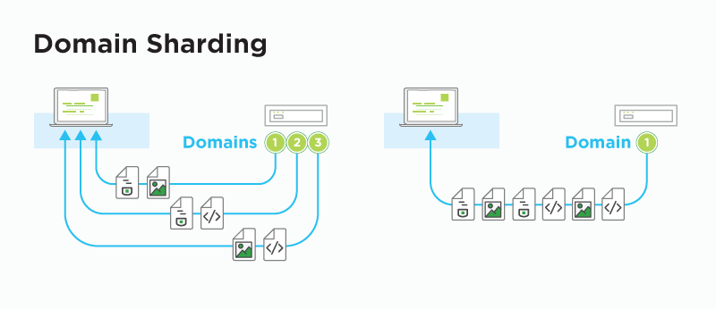
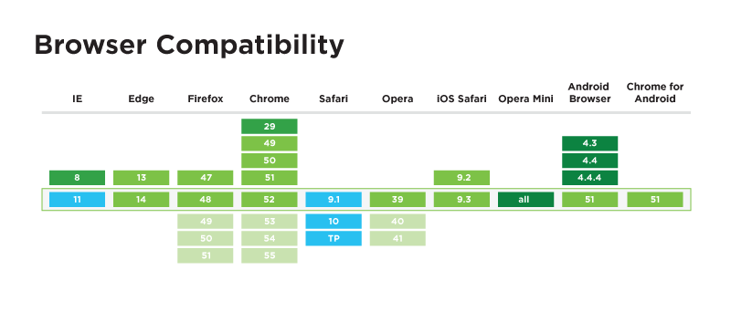

Предимства

-
Поддържа се от по-голямата част от браузърите, както може да се види на графиката по-долу.

Недостатъци
Първо трябва да споменем, че към днешна дата все още няма по-добра алтернатива на HTTP/2. Въпреки многобройните му предимства, протоколът има и своите недостатъци, които трябва да отбележим. Експертите очакват тези проблеми да бъдат разрешени във версия HTTP/3, но засега остава да разгледаме недостатъците на съществуващия HTTP/2.
-
Не е много бърз и не е много модерен. Очакваше се във версия /2 да има много повече feature-и, които в крайна сметка не са част от крайния продукт. Основната причина е, че версия /2 трябва да бъде съвместима с версия /1.1, като използва еднакви POST и GET заявки и codes of status (200, 301, 404 и 500).
-
Криптирането на информация не е задължително. Преди години, криптирането беше ограничено предимно до финансови транзакции, но хакерските атаки са осъществими заплахи, които могат да донесат усложнения в личен и бизнес план. Криптирането може да ни защити от подобни атаки, но след дълго обсъждане, разработчиците решиха да оставят логиката същата, както в HTTP/1.1. Това означава, че собствениците на уебсайтове може да те защитят сайтовете си и да изложат потребителите си на риск. За да използваме криптиране на информация в HTTP/2, трябва да има активиран SSL/TLS сертификат, подобно на HTTPS.
-
Проблемът с бисквитките остава. Един от най-големите провали по отношение на сигурност в HTTP/1.1 са бисквитките - текстови (.txt) файлове, които съдържат информация за клиента и могат да бъдат част от HTTP заявка към сървър (сайт). Използвайки тези файлове, сървърът може да идентифицира клиента, да запази сесията му (за да не изисква повторно потребителско име и парола, например) или да му покаже персонализирани реклами (използвайки запазената информация за неговия пол, възраст, интереси и т.н.). На пръв поглед не изглежда като голям проблем, но в действителност тези “бисквитки” (файлове) могат да бъдат откраднати от хакери, които да получат информация и достъп до имейл адреса, социалните мрежи и други сайтове, използвани от потребителя, които съдържат лична информация. А най-притеснителното е, че дори не е необходима парола! Тези атаки се наричат cross-site scripting (XSS) атаки.
Към използвани термини